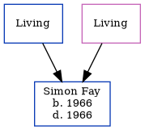

Simon Gavin Fay 1966 - 1966
[ Home ] | [ Calendar ] | [ Surnames Index ] | [ Errors ] | [ Family History ]The child of Leslie Fay and Gillian Horne, Simon Fay, the first cousin once-removed on the father's side of Nigel Horne, was born in Barnsley, Yorkshire, England in 19661.
He died on the same day.
Parents
- Leslie P
- Gillian C
Citations
- England & Wales deaths 1837-2007 - Findmypast
Media
England & Wales deaths 1837-2007 Transcription - BMD-D-1966-1-AZ-000369-061
England & Wales births 1837-2006 Transcription - BMD-B-1966-1-AZ-000477-139
Family Tree
Map
Generated by ged2site. Last updated on Jul 3, 2024
Known Issues
Death date (1966) has no citations